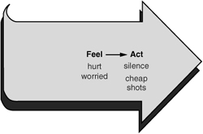
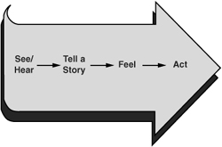
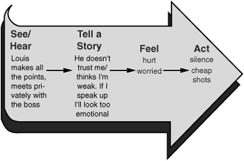

It’s not how you play the game, it’s how the game plays you.
At this point you may be saying to yourself, “How am I supposed to remember to do all this stuff—especially when my emotions are raging like hot magma?”
This chapter explores how to gain control of crucial conversations by learning how to take charge of your emotions. By learning to exert influence over your own feelings, you’ll place yourself in a far better position to use all the tools we’ve explored thus far.
How many times have you heard someone say: “He made me mad!"? How many times have you said it? For instance, you’re sitting quietly at home watching TV and your mother-in-law (who lives with you) walks in. She glances around and then starts picking up the mess you made a few minutes earlier when you whipped up a batch of nachos. This ticks you off. She’s always smugly skulking around the house, thinking you’re a slob.
A few minutes later when your spouse asks you why you’re so upset, you explain, “It’s your mom again. I was lying here enjoying myself when she gave me that look, and it really got me going. To be honest, I wish she would quit doing that. It’s my only day off, I’m relaxing quietly, and then she walks in and pushes my buttons.”
“Does she push your buttons?” your spouse asks. “Or do you?”
That’s an interesting question.
One thing’s for certain. No matter who is doing the button pushing, some people tend to react more explosively than others—and to the same stimulus, no less. Why is that? For instance, what enables some people to listen to withering feedback without flinching, whereas others pitch a fit when you tell them they’ve got a smear of salsa on their chin? Why is it that sometimes you yourself can take a verbal blow to the gut without batting an eye, but other times you go ballistic if someone so much as looks at you sideways?
To answer these questions, we’ll start with two rather bold (and sometimes unpopular) claims. Then, having tipped our hand, we’ll explain the logic behind each claim.
Claim One. Emotions don’t settle upon you like a fog. They are not foisted upon you by others. No matter how comfortable it might make you feel saying it—others don’t make you mad. You make you mad. You and only you create your emotions.
Claim Two. Once you’ve created your emotions, you have only two options: You can act on them or be acted on by them. That is, when it comes to strong emotions, you either find a way to master them or fall hostage to them.
Here’s how this all unfolds.
Consider Maria, a copywriter who is currently hostage to some pretty strong emotions. She and her colleague Louis just reviewed the latest draft of a proposal with their boss. During the meeting, they were supposed to be jointly presenting their latest ideas. But when Maria paused to take a breath, Louis took over the presentation, making almost all the points they had come up with together. When the boss turned to Maria for input, there was nothing left for her to say.
Maria has been feeling humiliated and angry throughout this project. First, Louis took their suggestions to the boss and discussed them behind her back. Second, he completely monopolized the presentation. Consequently, Maria believes that Louis is downplaying her contribution because she’s the only woman on the team.
She’s getting fed up with his “boys’ club” mentality. So what does she do? She doesn’t want to appear “oversensitive,” so most of the time she says nothing and just does her job. However, she does manage to assert herself by occasionally getting in sarcastic jabs about the way she’s being treated.
“Sure I can get that printout for you. Should I just get your coffee and whip up a bundt cake while I’m at it?” she mutters, and rolls her eyes as she exits the room.
Louis, in turn, finds Maria’s cheap shots and sarcasm puzzling. He’s not sure what has Maria upset but is beginning to despise her smug attitude and hostile reaction to most everything he does. As a result, when the two work together, you could cut the tension with a knife.
The worst at dialogue fall into the trap Maria has fallen into. Maria is completely unaware of a dangerous assumption she’s making. She’s upset at being overlooked and is keeping a professional silence. She’s assuming that her emotions and behavior are the only right and reasonable reactions under the circumstances. She’s convinced that anyone in her place would feel the same way.
Here’s the problem. Maria is treating her emotions as if they are the only valid response. Since, in her mind, they are both justified and accurate, she makes no effort to change or even question them. In fact, in her view, Louis caused them. Ultimately, her actions (saying nothing and taking cheap shots) are being driven by these very emotions. Since she’s not acting on her emotions, her emotions are acting on her—controlling her behavior and driving her deteriorating relationship with Louis. The worst at dialogue are hostages to their emotions, and they don’t even know it.
The good at dialogue realize that if they don’t control their emotions, matters will get worse. So they try something else. They fake it. They choke down reactions and then do their best to get back to dialogue. At least, they give it a shot.
Unfortunately, once they hit a rough spot in a crucial conversation, their suppressed emotions come out of hiding. They show up as tightened jaws or sarcastic comments. Dialogue takes a hit. Or maybe their paralyzing fear causes them to avoid saying what they really think. Meaning is cut off at the source. In any case, their emotions sneak out of the cubbyhole they’ve been crammed into and find a way into the conversation. It’s never pretty, and it always kills dialogue.
The best at dialogue do something completely different. They aren’t held hostage by their emotions, nor do they try to hide or suppress them. Instead, they act on their emotions. That is, when they have strong feelings, they influence (and often change) their emotions by thinking them out. As a result, they choose their emotions, and by so doing, make it possible to choose behaviors that create better results.
This, of course, is easier said than done. How do you rethink yourself from an emotional and dangerous state into one that puts you back in control?
Where should Maria start? To help rethink or gain control of our emotions, let’s see where our feelings come from in the first place. Let’s look at a model that helps us first examine and then gain control of our own emotions.
Consider Maria. She’s feeling hurt but is worried that if she says something to Louis, she’ll look too emotional, so she alternates between holding her feelings inside (avoiding) and taking cheap shots (masking).
As Figure 6-1 demonstrates, Maria’s actions stem from her feelings. First she feels and then she acts. That’s easy enough, but it

Figure 6-1. How Feelings Drive Actions
begs the question: What’s causing Maria’s feelings in the first place?
Is it Louis’s behavior? As was the case with the nacho-mother-in-law, did Louis make Maria feel insulted and hurt? Maria heard and saw Louis do something, she generated an emotion, and then she acted out her feelings—using forms of masking and avoiding.
So here’s the big question: What happens between Louis acting and Maria feeling? Is there an intermediate step that turns someone else’s actions into our feelings? If not, then it has to be true that others make us feel the way we do.
As it turns out, there is an intermediate step between what others do and how we feel. That’s why, when faced with the same circumstances, ten people may have ten different emotional responses. For instance, with a coworker like Louis, some might feel insulted whereas others merely feel curious. Some become angry and others feel concern or even sympathy.
What is this intermediate step? Just after we observe what others do and just before we feel some emotion about it, we tell ourselves a story. That is, we add meaning to the action we observed. To the simple behavior we add motive. Why were they doing that? We also add judgment—is that good or bad? And then, based on these thoughts or stories, our body responds with an emotion.
Pictorially it looks like the model in Figure 6-2. We call this model our Path to Action because it explains how emotions, thoughts, and experiences lead to our actions.
You’ll note that we’ve added telling a story to our model. We observe, we tell a story, and then we feel. Although this addition complicates things a bit, it also gives us hope. Since we and only

Figure 6-2. The Path to Action
we are telling the story, we can take back control of our own emotions by telling a different story. We now have a point of leverage or control. If we can find a way to control the stories we tell, by rethinking or retelling them, we can master our emotions and, therefore, master our crucial conversations.
“Nothing in this world is good or bad,
but thinking makes it so.”
—WILLIAM SHAKESPEARE
Stories explain what’s going on. Exactly what are our stories? They are our interpretations of the facts. They help explain what we see and hear. They’re theories we use to explain why, how, and what. For instance, Maria asks: “Why does Louis take over? He doesn’t trust my ability to communicate. He thinks that because I’m a woman, people won’t listen to me.”
Our stories also help explain how. “How am I supposed to judge all of this? Is this a good or a bad thing? Louis thinks I’m incompetent, and this is bad.”
Finally, a story might also include what. “What should I do about all this? If I say something, he’ll think I’m a whiner or oversensitive or militant, so it’s best to clam up.”
Of course, as we come up with our own meaning or stories, it isn’t long until our body responds with strong feelings or emotions—they’re directly linked to our judgments of right/wrong, good/bad, kind/selfish, fair/unfair, etc. Maria’s story yields anger and frustration. These feelings, in turn, drive Maria to her actions—toggling back and forth between clamming up and taking an occasional cheap shot (see Figure 6-3).
Even if you don’t realize it, you are telling yourself stories. When we teach people that it’s our stories that drive our emotions and not other people’s actions, someone inevitably raises a hand and says, “Wait a minute! I didn’t notice myself telling a story. When that guy laughed at me during my presentation, I just felt angry. The feelings came first; the thoughts came second.”
Storytelling typically happens blindingly fast. When we believe we’re at risk, we tell ourselves a story so quickly that we don’t even know we’re doing it. If you don’t believe this is true, ask yourself whether you always become angry when someone

Figure 6-3. Maria’s Path to Action
laughs at you. If sometimes you do and sometimes you don’t, then your response isn’t hardwired. That means something goes on between others laughing and you feeling. In truth, you tell a story. You may not remember it, but you tell a story.
Any set of facts can be used to tell an infinite number of stories. Stories are just that, stories. These fabrications could be told in any of thousands of different ways. For instance, Maria could just as easily have decided that Louis didn’t realize she cared so much about the project. She could have concluded that Louis was feeling unimportant and this was a way of showing he was valuable. Or maybe he had been burned in the past because he hadn’t personally seen through every detail of a project. Any of these stories would have fit the facts and would have created very different emotions.
If we take control of our stories, they won’t control us. People who excel at dialogue are able to influence their emotions during crucial conversations. They recognize that while it’s true that at first we are in control of the stories we tell—after all, we do make them up of our own accord—once they’re told, the stories control us. They control how we feel and how we act. And as a result, they control the results we get from our crucial conversations.
But it doesn’t have to be this way. We can tell different stories and break the loop. In fact, until we tell different stories, we cannot break the loop.
If you want improved results from your crucial conversations, change the stories you tell yourself—even while you’re in the middle of the fray.
What’s the most effective way to come up with different stories? The best at dialogue find a way to first slow down and then take charge of their Path to Action. Here’s how.
To slow down the lightning-quick storytelling process and the subsequent flow of adrenaline, retrace your Path to Action—one element at a time. This calls for a bit of mental gymnastics. First you have to stop what you’re currently doing. Then you have to get in touch with why you’re doing it. Here’s how to retrace your path:
 [Act] Notice your behavior. Ask:
[Act] Notice your behavior. Ask:
Am I in some form of silence or violence?
 [Feel] Get in touch with your feelings.
[Feel] Get in touch with your feelings.
What emotions are encouraging me to act this way?
 [Tell story] Analyze your stories.
[Tell story] Analyze your stories.
What story is creating these emotions?
 [See/hear] Get back to the facts.
[See/hear] Get back to the facts.
What evidence do I have to support this story?
By retracing your path one element at a time, you put yourself in a position to think about, question, and change any one or more of the elements.
Why would you stop and retrace your Path to Action in the first place? Certainly if you’re constantly stopping what you’re doing and looking for your underlying motive and thoughts, you won’t even be able to put on your shoes without thinking about it for who knows how long. You’ll die of analysis paralysis.
Actually, you shouldn’t constantly stop and question your actions. If you Learn to Look (as we suggested in Chapter 4) and note that you yourself are slipping into silence or violence, you have good reason to stop and take stock.
But looking isn’t enough. You must take an honest look at what you’re doing. If you tell yourself a story that your violent behavior is a “necessary tactic,” you won’t see the need to reconsider your actions. If you immediately jump in with “they started it,” or otherwise find yourself rationalizing your behavior, you also won’t feel compelled to change. Rather than stop and review what you’re doing, you’ll devote your time to justifying your actions to yourself and others.
When an unhelpful story is driving you to silence or violence, stop and consider how others would see your actions. For example, if the 60 Minutes camera crew replayed this scene on national television, how would you look? What would they tell about your behavior?
Not only do those who are best at crucial conversations notice when they’re slipping into silence or violence, but they are also able to admit it. They don’t wallow in self-doubt, of course, but they do recognize the problem and begin to take corrective action. The moment they realize that they’re killing dialogue, they review their own Path to Action.
As skilled individuals begin to retrace their own Path to Action, they immediately move from examining their own unhealthy behavior to exploring their feelings or emotions. At first glance this task sounds easy. “I’m angry!” you think to yourself. What could be easier?
Actually, identifying your emotions is more difficult than you might imagine. In fact, many people are emotionally illiterate. When asked to describe how they’re feeling, they use words such as “bad” or “angry” or “frightened"—which would be okay if these were accurate descriptors, but often they’re not. Individuals say they’re angry when, in fact, they’re feeling a mix of embarrassment and surprise. Or they suggest they’re unhappy when they’re feeling violated. Perhaps they suggest they’re upset when they’re really feeling humiliated and cheated.
Since life doesn’t consist of a series of vocabulary tests, you might wonder what difference words can make. But words do matter. Knowing what you’re really feeling helps you take a more accurate look at what is going on and why. For instance, you’re far more likely to take an honest look at the story you’re telling yourself if you admit you’re feeling both embarrassed and surprised rather than simply angry.
How about you? When experiencing strong emotions, do you stop and think about your feelings? If so, do you use a rich vocabulary, or do you mostly draw from terms such as “bummed out” and “furious"? Second, do you talk openly with others about how you feel? Do you willingly talk with loved ones about what’s going on inside of you? Third, in so doing, is your vocabulary robust and accurate?
It’s important to get in touch with your feelings, and to do so, you may want to expand your emotional vocabulary.
Question your feelings and stories. Once you’ve identified what you’re feeling, you have to stop and ask, given the circumstances, is it the right feeling? Meaning, of course, are you telling the right story? After all, feelings come from stories, and stories are our own invention.
The first step to regaining emotional control is to challenge the illusion that what you’re feeling is the only right emotion under the circumstances. This may be the hardest step, but it’s also the most important one. By questioning our feelings, we open ourselves up to question our stories. We challenge the comfortable conclusion that our story is right and true. We willingly question whether our emotions (very real), and the story behind them (only one of many possible explanations), are accurate.
For instance, what were the facts in Maria’s story? She saw Louis give the whole presentation. She heard the boss talk about meeting with Louis to discuss the project when she wasn’t present. That was the beginning of Maria’s Path to Action.
Don’t confuse stories with facts. Sometimes you fail to question your stories because you see them as immutable facts. When you generate stories in the blink of an eye, you can get so caught up in the moment that you begin to believe your stories are facts. They feel like facts. You confuse subjective conclusions with steel-hard data points. For example, in trying to ferret out facts from story, Maria might say, “He’s a male chauvinist pig—that’s a fact! Ask anyone who has seen how he treats me!”
“He’s a male chauvinist pig” is not a fact. It’s the story that Maria created to give meaning to the facts. The facts could mean just about anything. As we said earlier, others could watch Maria’s interactions with Louis and walk away with different stories.
Separate fact from story by focusing on behavior. To separate fact from story, get back to the genuine source of your feelings. Test your ideas against a simple criterion: Can you see or hear this thing you’re calling a fact? Was it an actual behavior?
For example, it is a fact that Louis “gave 95 percent of the presentation and answered all but one question.” This is specific, objective, and verifiable. Any two people watching the meeting would make the same observation. However, the statement “He doesn’t trust me” is a conclusion. It explains what you think, not what the other person did. Conclusions are subjective.
Spot the story by watching for “hot” words. Here’s another tip. To avoid confusing story with fact, watch for “hot” terms. For example, when assessing the facts, you might say, “She scowled at me” or “He made a sarcastic comment.” Words such as “scowl” and “sarcastic” are hot terms. They express judgments and attributions that, in turn, create strong emotions. They are story, not fact. Notice how much different it is when you say: “Her eyes pinched shut and her lips tightened,” as opposed to “She scowled at me.” In Maria’s case, she suggested that Louis was controlling and didn’t respect her. Had she focused on his behavior (he talked a lot and met with the boss one-on-one), this less volatile description would have allowed for any number of interpretations. For example, perhaps Louis was nervous, concerned, or unsure of himself.
As we begin to piece together why people are doing what they’re doing (or equally important, why we’re doing what we’re doing), with time and experience we become quite good at coming up with explanations that serve us well. Either our stories are completely accurate and propel us in healthy directions, or they’re quite inaccurate but justify our current behavior—making us feel good about ourselves and calling for no need to change.
It’s the second kind of story that routinely gets us into trouble. For example, we move to silence or violence, and then we come up with a perfectly plausible reason for why it’s okay. “Of course I yelled at him. Did you see what he did? He deserved it.” “Hey, don’t be giving me the evil eye. I had no other choice.” We call these imaginative and self-serving concoctions “clever stories.” They’re clever because they allow us to feel good about behaving badly. Better yet, they allow us to feel good about behaving badly even while achieving abysmal results.
Among all of the clever stories we tell, here are the three most common.
The first of the clever stories is a Victim Story. Victim Stories, as you might imagine, make us out to be innocent sufferers. The theme is always the same. The other person is bad and wrong, and we are good and right. Other people do bad things, and we suffer as a result.
In truth, there is such a thing as an innocent victim. You’re stopped in the street and held up at gunpoint. When an event such as this occurs, it’s a sad fact, not a story. You are a victim.
But all tales of victimization are not so one-sided. When you tell a Victim Story, you ignore the role you played in the problem. You tell your story in a way that judiciously avoids facts about whatever you have done (or neglected to do) that might have contributed to the problem.
For instance, last week your boss took you off a big project, and it hurt your feelings. You complained to everyone about how bad you felt. Of course, you failed to let your boss know that you were behind on an important project, leaving him high and dry—which is why he removed you in the first place. This part of the story you leave out because, hey, he made you feel bad.
To help support your Victim Stories you speak of nothing but your noble motives. “I took longer because I was trying to beat the standard specs.” Then you tell yourself that you’re being punished for your virtues, not your vices. “He just doesn’t appreciate a person with my superb attention to detail.” (This added twist turns you from victim into martyr. What a bonus!)
We create these nasty little tales by turning normal, decent human beings into villains. We impute bad motive, and then we tell everyone about the evils of the other party as if somehow we’re doing the world a huge favor.
For example, we describe a boss who is zealous about quality as a control freak. When our spouse is upset that we didn’t keep a commitment, we see him or her as inflexible and stubborn.
In Victim Stories we exaggerate our own innocence. In Villain Stories we overemphasize the other person’s guilt. We automatically assume the worst possible motives while ignoring any possible good or neutral intentions a person may have. Labeling is a common device in Villain Stories. For example, “I can’t believe that bonehead gave me bad materials again.” By employing the handy label, we are now dealing not with a complex human being, but with a bonehead.
Not only do Villain Stories help us blame others for bad results, but they also set us up to then do whatever we want to the “villains.” After all, we can feel okay insulting or abusing a bonehead—whereas we might have to be more careful with a living, breathing person. Then when we fail to get the results we really want, we stay stuck in our ineffective behavior because, after all, look who we’re dealing with!
Watch for the double standard. When you pay attention to Victim and Villain Stories and catch them for what they are—unfair characterizations—you begin to see the terrible double standard we use when our emotions are out of control. When we make mistakes, we tell a Victim Story by claiming our intentions were innocent and pure. “Sure I was late getting home and didn’t call you, but I couldn’t let the team down!” On the other hand, when others do things that hurt us, we tell Villain Stories in which we invent terrible motives for others based on how their actions affected us. “You are so thoughtless! You could have called me and told me you were going to be late.”
Finally come Helpless Stories. In these fabrications we make ourselves out to be powerless to do anything. We convince ourselves that there are no healthy alternatives for dealing with our predicament, which justifies the action we’re about to take. A Helpless Story might suggest, “If I didn’t yell at my son, he wouldn’t listen.” Or on the flip side, “If I told my husband this, he would just be defensive.” While Villian and Victim Stories look back to explain why we’re in the situation we’re in, Helpless Stories look forward to explain why we can’t do anything to change our situation.
It’s particularly easy to act helpless when we turn others’ behavior into fixed and unchangeable traits. For example, when we decide our boss is a “control freak” (Villain Story), we are less inclined to give him feedback because, after all, control freaks like him don’t accept feedback (Helpless Story). Nothing we can do will change that fact.
As you can see, Helpless Stories often stem from Villain Stories and typically offer us nothing more than Sucker’s Choices.
They match reality. Sometimes the stories we tell are accurate. The other person is trying to cause us harm, we are innocent victims, or maybe we really can’t do much about the problem. It can happen. It’s not common, but it can happen.
They get us off the hook. More often than not, our conclusions transform from reasonable explanations to clever stories when they conveniently excuse us from any responsibility—when, in reality, we have been partially responsible. The other person isn’t bad and wrong, and we aren’t right and good. The truth lies somewhere in the middle. However, if we can make others out as wrong and ourselves out as right, we’re off the hook. Better yet, once we’ve demonized others, we can even insult and abuse them if we want.
Clever stories keep us from acknowledging our own sellouts. By now it should be clear that clever stories cause us problems. A reasonable question at this point is, “If they’re so terribly hurtful, why do we ever tell clever stories?”
Our need to tell clever stories often starts with our own sellouts. Like it or not, we usually don’t begin telling stories that justify our actions until we have done something that we feel a need to justify.1
We sell out when we consciously act against our own sense of what’s right. And after we’ve sold out, we have only two choices: own up to our sellout, or try to justify it. And if we don’t admit to our errors, we inevitably look for ways to justify them. That’s when we begin to tell clever stories.
Let’s look at an example of a sellout: You’re driving in heavy traffic. You begin to pass cars that are attempting to merge into your lane. A car very near you has accelerated and is entering your lane. A thought strikes you that you should let him in. It’s the nice thing to do, and you’d want someone to let you in. But you don’t. You accelerate forward and close the gap. What happens next? You begin to have thoughts like these: “He can’t just crowd in on me. What a jerk! I’ve been fighting this traffic a long time. Besides, I’ve got an important appointment to get to.” And so on.
This story makes you the innocent victim and the other person the nasty villain. Under the influence of this story you now feel justified in not doing what you originally thought you should have done. You also ignore what you would think of others who did the same thing—"That jerk didn’t let me in!”
Consider an example more related to crucial conversations. Your spouse has an annoying habit. It’s not a big deal, but you feel you should mention it. But you don’t. Instead, you just huff or roll your eyes, hoping that will send the message. Unfortunately, your spouse doesn’t pick up the hint and continues the habit. Your annoyance turns to resentment. You feel disgusted that your spouse is so thick that he or she can’t pick up an obvious hint. And besides, you shouldn’t have to mention this anyway—any reasonable person should notice this on his or her own! Do you have to point out everything? From this point forward you begin to make insulting wisecracks about the issue until it escalates into an ugly confrontation.
Notice the order of the events in both of these examples. What came first, the story or the sellout? Did you convince yourself of the other driver’s selfishness and then not let him in? Of course not. You had no reason to think he was selfish until you needed an excuse for your own selfish behavior. You didn’t start telling clever stories until after you failed to do something you knew you should have done. Your spouse’s annoying habit didn’t become a source of resentment until you became part of the problem. You got upset because you sold out. And the clever story helped you feel good about being rude.
Sellouts are often not big events. In fact, they can be so small that they’re easy for us to overlook when we’re crafting our clever stories. Here are some common ones:
 You believe you should help someone, but don’t.
You believe you should help someone, but don’t.
 You believe you should apologize, but don’t.
You believe you should apologize, but don’t.
 You believe you should stay late to finish up on a commitment, but go home instead.
You believe you should stay late to finish up on a commitment, but go home instead.
 You say yes when you know you should say no, then hope no one follows up to see if you keep your commitment.
You say yes when you know you should say no, then hope no one follows up to see if you keep your commitment.
 You believe you should talk to someone about concerns you have with him or her, but don’t.
You believe you should talk to someone about concerns you have with him or her, but don’t.
 You do less than your share and think you should acknowledge it, but say nothing knowing no one else will bring it up either.
You do less than your share and think you should acknowledge it, but say nothing knowing no one else will bring it up either.
 You believe you should listen respectfully to feedback, but become defensive instead.
You believe you should listen respectfully to feedback, but become defensive instead.
 You see problems with a plan someone presents and think you should speak up, but don’t.
You see problems with a plan someone presents and think you should speak up, but don’t.
 You fail to complete an assignment on time and believe you should let others know, but don’t.
You fail to complete an assignment on time and believe you should let others know, but don’t.
 You know you have information a coworker could use, but keep it to yourself.
You know you have information a coworker could use, but keep it to yourself.
Even small sellouts like these get us started telling clever stories. When we don’t admit to our own mistakes, we obsess about others’ faults, our innocence, and our powerlessness to do anything other than what we’re already doing. We tell a clever story when we want self-justification more than results. Of course, self-justification is not what we really want, but we certainly act as if it is.
With that sad fact in mind, let’s focus on what we really want. Let’s look at the final Master My Stories skill.
Once we’ve learned to recognize the clever stories we tell ourselves, we can move to the final Master My Stories skill. The dialogue-smart recognize that they’re telling clever stories, stop, and then do what it takes to tell a useful story. A useful story, by definition, creates emotions that lead to healthy action—such as dialogue.
And what transforms a clever story into a useful one? The rest of the story. That’s because clever stories have one characteristic in common: They’re incomplete. Clever stories omit crucial information about us, about others, and about our options. Only by including all of these essential details can clever stories be transformed into useful ones.
What’s the best way to fill in the missing details? Quite simply, it’s done by turning victims into actors, villains into humans, and the helpless into the able. Here’s how.
Turn victims into actors. If you notice that you’re talking about yourself as an innocent victim (and you weren’t held up at gunpoint), ask:
 Am I pretending not to notice my role in the problem?
Am I pretending not to notice my role in the problem?
This question jars you into facing up to the fact that maybe, just maybe, you did something to help cause the problem. Instead of being a victim, you were an actor. This doesn’t necessarily mean you had malicious motives. Perhaps your contribution was merely a thoughtless omission. Nonetheless, you contributed.
For example, a coworker constantly leaves the harder or noxious tasks for you to complete. You’ve frequently complained to friends and loved ones about being exploited. The parts you leave out of the story are that you smile broadly when your boss compliments you for your willingness to take on challenging jobs, and you’ve never said anything to your coworker. You’ve hinted, but that’s about it.
The first step in telling the rest of this story would be to add these important facts to your account. By asking what role you’ve played, you begin to realize how selective your perception has been. You become aware of how you’ve minimized your own mistakes while you’ve exaggerated the role of others.
Turn villains into humans. When you find yourself labeling or otherwise vilifying others, stop and ask:
 Why would a reasonable, rational, and decent person do what this person is doing?
Why would a reasonable, rational, and decent person do what this person is doing?
This particular question humanizes others. As we search for plausible answers to it, our emotions soften. Empathy often replaces judgment, and depending upon how we’ve treated others, personal accountability replaces self-justification.
For instance, that coworker who seems to conveniently miss out on the tough jobs told you recently that she could see you were struggling with an important assignment, and yesterday (while you were tied up on a pressing task) she pitched in and completed the job for you. You were instantly suspicious. She was trying to make you look bad by completing a high-profile job. How dare she pretend to be helpful when her real goal was to discredit you while tooting her own horn! Well, that’s the story you’ve told yourself.
But what if she really were a reasonable, rational, and decent person? What if she had no motive other than to give you a hand? Isn’t it a bit early to be vilifying her? And if you do, don’t you run the risk of ruining a relationship? Might you go off half-cocked, accuse her, and then learn you were wrong?
Our purpose for asking why a reasonable, rational, and decent person might be acting a certain way is not to excuse others for any bad things they may be doing. If they are, indeed, guilty, we’ll have time to deal with that later. The purpose of the humanizing question is to deal with our own stories and emotions. It provides us with still another tool for working on ourselves first by providing a variety of possible reasons for the other person’s behavior.
In fact, with experience and maturity we learn to worry less about others’ intent and more about the effect others’ actions are having on us. No longer are we in the game of rooting out unhealthy motives. And here’s the good news. When we reflect on alternative motives, not only do we soften our emotions, but equally important, we relax our absolute certainty long enough to allow for dialogue—the only reliable way of discovering others’ genuine motives.
Turn the helpless into the able. Finally, when you catch yourself bemoaning your own helplessness, you can tell the complete story by returning to your original motive. To do so, stop and ask:
 What do I really want? For me? For others? For the relationship?
What do I really want? For me? For others? For the relationship?
Then, kill the Sucker’s Choice that’s made you feel helpless to choose anything other than silence or violence. Do this by asking:
 What would I do right now if I really wanted these results?
What would I do right now if I really wanted these results?
For example, you now find yourself insulting your coworker for not pitching in with a tough job. Your coworker seems surprised at your strong and “out of the blue” reaction. In fact, she’s staring at you as if you’ve slipped a cog. You, of course, have told yourself that she is purposefully avoiding noxious tasks, and that despite your helpful hints, she has made no changes.
“I have to get brutal,” you tell yourself. “I don’t like it, but if I don’t offend her, I’ll be stuck doing the grunt work forever.”
You’ve strayed from what you really want—to share work equally and to have a good relationship. You’ve given up on half of your goals by making a Sucker’s Choice. “Oh well, better to offend her than to be made a fool.”
What should you be doing instead? Openly, honestly, and effectively discussing the problem—not taking potshots and then justifying yourself. When you refuse to make yourself helpless, you’re forced to hold yourself accountable for using your dialogue skills rather than bemoaning your weakness.
To see how this all fits together, let’s circle back to Maria. Let’s assume she’s retraced her Path to Action and separated the facts from the stories. Doing this has helped her realize that the story she told was incomplete, defensive, and hurtful. When she watched for the Three Clever Stories, she saw them with painful clarity. Now she’s ready to tell the rest of the story. So she asks herself:
 Am I pretending not to notice my role in the problem?
Am I pretending not to notice my role in the problem?
“When I found out that Louis was holding project meetings without me, I felt like I should ask him about why I wasn’t included. I believed that if I did, I could open a dialogue that would help us work better together. But then I didn’t, and as my resentment grew, I was even less interested in broaching the subject.”
 Why would a reasonable, rational, and decent person do what Louis is doing?
Why would a reasonable, rational, and decent person do what Louis is doing?
“He really cares about producing good-quality work. Maybe he doesn’t realize that I’m as committed to the success of the project as he is.”
 What do I really want?
What do I really want?
“I want a respectful relationship with Louis. And I want recognition for the work I do.”
 What would I do right now if I really wanted these results?
What would I do right now if I really wanted these results?
“I’d make an appointment to sit down with Louis and talk about how we work together.”
As we tell the rest of the story, we free ourselves from the poisoning effects of unhealthy emotions. Best of all, as we regain control and move back to dialogue, we become masters of our own emotions rather than hostages.
And what about Maria? What did she actually do? She scheduled a meeting with Louis. As she prepared for the meeting, she refused to feed her ugly and incomplete stories, admitted her own role in the problem, and entered the conversation with an open mind. Perhaps Louis wasn’t trying to make her appear bad or fill in for her incompetence.
As Maria sat down with Louis, she found a way to tentatively share what she had observed. (We’ll look at exactly how to do this in the next chapter.) Fortunately, not only did Maria master her story, but she knew how to talk about it as well. While engaging in healthy dialogue, Louis apologized for not including her in meetings with the boss. He explained that he was trying to give the boss a heads-up on some controversial parts of the presentation—and realized in retrospect that he shouldn’t have done this without her. He also apologized for dominating during the presentation. Maria learned from the conversation that Louis tends to talk more when he gets nervous. He suggested that they each be responsible for either the first or second half of the presentation and stick to their assignments so he would be less likely to crowd her out. The discussion ended with both of them understanding the other’s perspective and Louis promising to be more sensitive in the future.
If strong emotions are keeping you stuck in silence or violence, try this.
Notice your behavior. If you find yourself moving away from dialogue, ask yourself what you’re really doing.
 Am I in some form of silence or violence?
Am I in some form of silence or violence?
Get in touch with your feelings. Learn to accurately identify the emotions behind your story.
 What emotions are encouraging me to act this way?
What emotions are encouraging me to act this way?
Analyze your stories. Question your conclusions and look for other possible explanations behind your story.
 What story is creating these emotions?
What story is creating these emotions?
Get back to the facts. Abandon your absolute certainty by distinguishing between hard facts and your invented story.
 What evidence do I have to support this story?
What evidence do I have to support this story?
Watch for clever stories. Victim, Villain, and Helpless Stories sit at the top of the list.
Ask:
 Am I pretending not to notice my role in the problem?
Am I pretending not to notice my role in the problem?
 Why would a reasonable, rational, and decent person do this?
Why would a reasonable, rational, and decent person do this?
 What do I really want?
What do I really want?
 What would I do right now if I really wanted these results?
What would I do right now if I really wanted these results?